인양 정산서
Dock 7 · 사실 표
- 개발
- NangmanGames (1인 스튜디오)
- 나라
- 대한민국
- 플랫폼
- Windows PC (Steam)
- 데모
- 2026년 12월
- Steam 넥스트 페스트
- 2027년 2월
- 앞서 해보기
- 2027년 1분기
- 데모 길이
- 60~90분쯤 (예정)
- 가격
- 미정
- 언어
- 한국어, 영어 (일본어·중국어 준비 중)
- 인원
- 1인용
- 조작
- 키보드와 마우스
- 장르
- 코지 우주선 해체, 2D 픽셀 아트
- 생성형 AI
- 그림·소리·번역에 썼습니다 (Steam 페이지에 공개)
한 문단 소개
버려진 우주선을 레이저로 한 겹씩 벗겨 내고, 안에 남은 것을 건져 오는 코지 해체 게임. 타이머도 빚도 게임 오버도 없어요. 라디오를 틀어 놓고 느긋하게 자르고, 주워 온 물건과 구해 온 식구들로 작은 도크를 채워 가요.
이런 게임이에요
- 레이저로 한 겹씩 벗겨 내는 해체
- 타이머, 빚, 게임 오버 없음
- 의뢰마다 새로 만들어지는, 사연 있는 폐함
- 유실물 진열과 도감, 방 인테리어
- 로파이 라디오와 모으는 테이프
- 어디서나 켜는 사진 모드
- 쓸모는 없지만 울릴 수 있는 경적
- 고양이
게임 소개
GIF 모두 · zip 20 MB
작은 해체 정거장, Dock 7. 당신은 여기서 고양이 한 마리와 지내는 프리랜서 해체업자예요. 게시판에서 폐함 한 척을 고르고, 인양함을 몰고 나가, 쓸 만한 것을 건져 돌아와요. 급할 건 하나도 없어요. 산소는 넉넉하고, 갚을 빚도 없고, 작업선은 터지지 않으니까요.

한 겹씩, 천천히
작은 작업선을 타고 폐함 위를 떠다니며 레이저로 그어요. 닿은 자리는 녹아서 열리고, 빙 둘러 오려낸 외판은 툭 하고 떨어져 나가 떠다녀요. 외판 아래에는 배선과 설비가, 그 아래에는 누군가 지내던 방이 있어요. 레이저는 지금 누른 층만 자르니까 아래 것을 태울 걱정 없이 마음껏 그어도 돼요.

건진 건 눈에 보여요
떠다니는 판과 부품은 트랙터빔으로 끌어와 작업선 뒤의 견인망에 담아요. 견인망은 담은 만큼 부풀어 오르고, 인양함 곁으로 가면 담긴 것이 줄줄이 넘어가 속이 비치는 스토리지에 쌓여요. 오늘 얼마나 건졌는지는 숫자가 아니라 쌓인 모양으로 알 수 있어요.

이 배엔 뭐가 남아 있을까
스캐너를 들면 외판 아래가 비쳐 보여요. 값나가는 부품도 좋지만, 진짜 반가운 건 전 주인이 두고 간 작은 물건들이에요. 낡은 머그잔, 뜨다 만 목도리, 병 속의 범선. 처음 건진 유실물은 팔지 않고 진열대에 올려 둬요. 화분은 조금씩 자라 꽃을 피우고, 휴대용 라디오를 건지면 도크에 라디오 안테나가 서요.

배마다 사연이 있어요
폐함은 의뢰마다 새로 만들어지고, 지나온 일이 그대로 남아 있어요. 그을린 선체, 덧칠로 지운 옛 이름, 두 사람 몫이 차려진 채인 식탁, 누가 구리판에 그려 놓은 웃는 얼굴. 무슨 일이 있었는지는 아무도 말해 주지 않아요. 한 겹씩 벗기다 보면 짐작이 갈 뿐이에요.

도크의 저녁
돌아오면 건져 온 것의 값을 받고, 저녁이 돼요. 새 유실물이 진열대에 놓이면 고양이가 와서 들여다봐요. 라디오를 틀어 두고, 식구들 방에 들르고, 고양이를 쓰다듬다가 하루를 마무리하면 다음 날 아침이 와요.

식구가 늘어요
가끔 통신에 구조 신호가 잡혀요. 폐함에 남겨진 구조 캡슐을 건져 오면 도크에 식구가 한 명씩 늘어요. 공방을 여는 사람, 연구실을 맡는 사람, 라디오에서 곡을 소개해 주는 사람. 저마다 제 방이 있고, 친해지면 그 사람의 곡이 담긴 테이프가 생겨요.

Dock 7이 우리 집이에요
번 돈으로 작업선을 손보고, 공방에서 새 도구와 모듈을 만들어요. 건져 온 자재로는 도크에 공사를 걸어요. 방마다 벽과 등불, 전구 줄을 고르고, 유실물은 마음에 드는 창턱으로 옮겨 놓아요. 인테리어를 바꿔도 수치는 오르지 않아요. 그렇게 조금씩 우리 집이 되는 거예요.

고양이 이름을 지어 주세요
Dock 7에는 처음부터 고양이가 한 마리 살아요. 하는 일은 없어요. 이름은 당신이 지어 주면 돼요. 위시리스트에 넣어 두고, 그때까지 천천히 생각해 보세요.
1920×1080 PNG, 워터마크 없음. 누르면 크게 보고, 화살표 키로 넘깁니다.

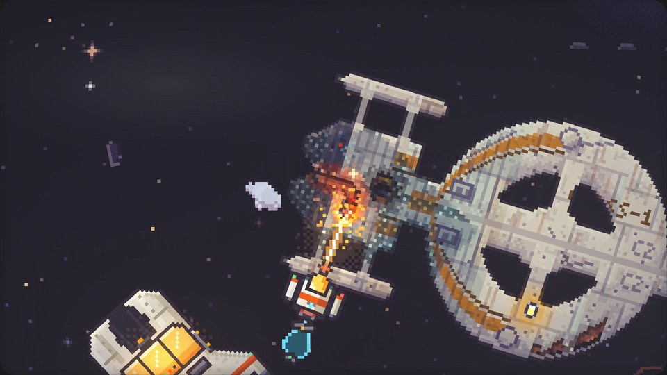

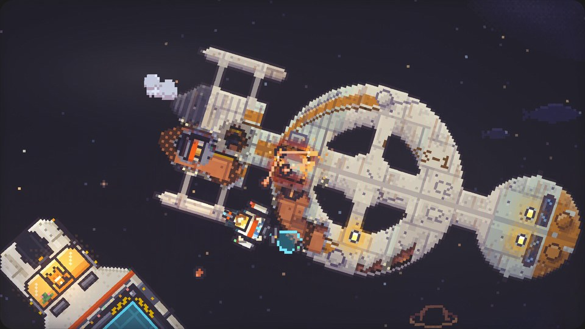

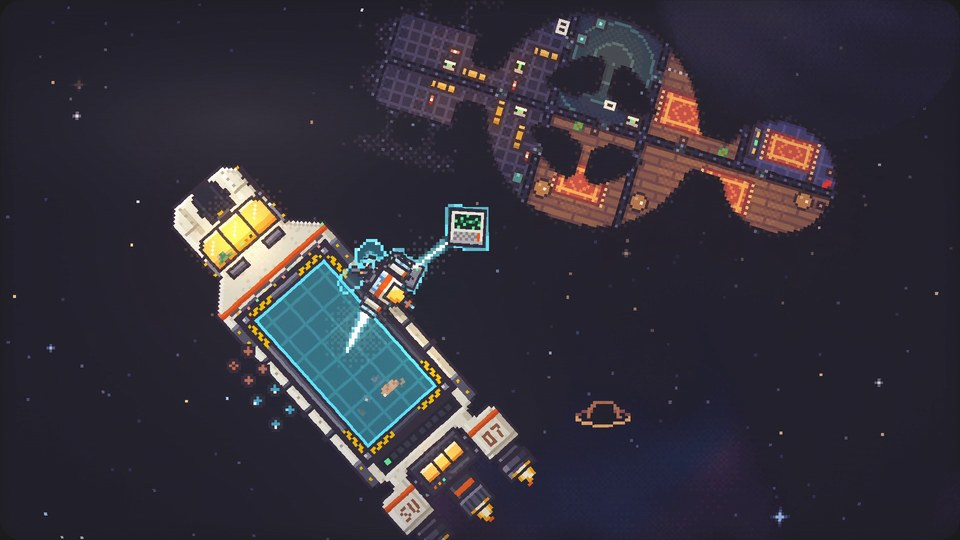

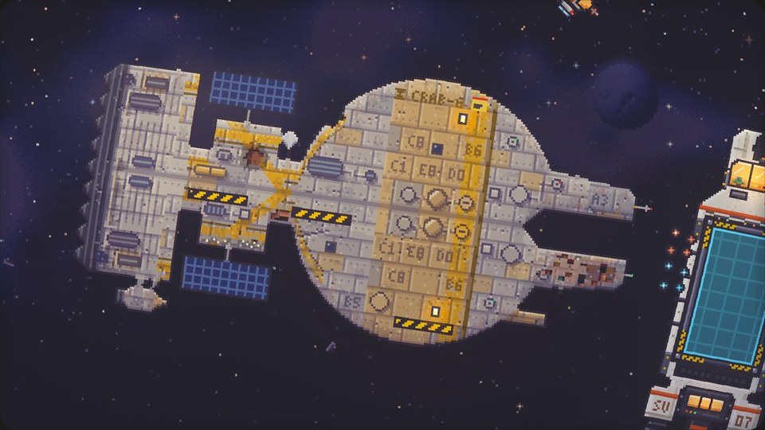

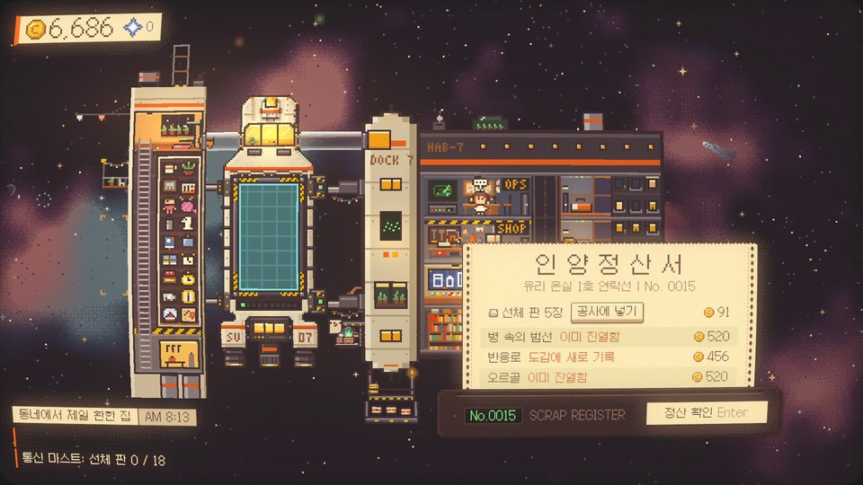


로고와 키 아트
로고와 키 아트 · zip 191 KB


썸네일용 오린 그림
오린 그림 · zip 14 KB8배로 키운 투명 PNG입니다. 정수배로 키우면 픽셀이 뭉개지지 않습니다.

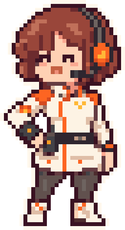

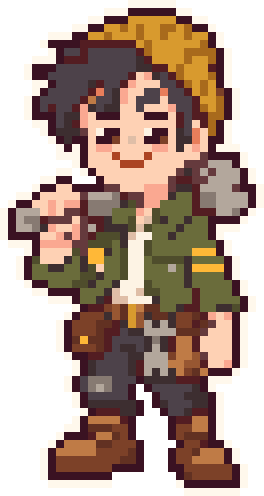

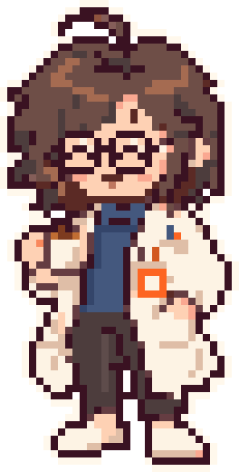

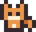

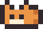

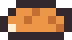
색
스튜디오
NangmanGames는 한국에서 혼자 게임을 만드는 1인 스튜디오입니다. 오랫동안 머릿속에 망상만 잔뜩 쌓아 두던 ‘아이디어맨’이었는데, 요즘은 그 망상을 하나씩 꺼내 실제로 조립해 보고 있습니다.
Dock 7은 그렇게 조립한 것들이 모인 곳입니다. 달을 도는 정거장, 아무도 찾으러 오지 않은 배, 밤에 켜 두는 라디오, 그리고 누군가 두고 간 물건들이요.
함께 만들고 있는 게임
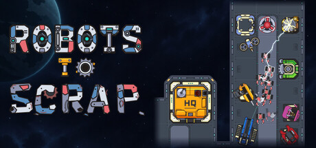
Robots To Scrap적이 지나갈 길을 직접 설계하는 파밍 타워 디펜스. 개발 중, 2027년 1분기 예정.방송과 영상
방송하셔도, 영상으로 만드셔도, 수익을 내셔도 괜찮습니다. 미리 물어보지 않으셔도 돼요.
라디오 곡을 포함한 게임 속 음악도 방송과 영상에 그대로 틀어 두셔도 됩니다.
설명란에 Steam 페이지 링크를 남겨 주시면 고맙겠습니다.
연락
인터뷰, 질문, 기사·영상용 Steam 키가 필요하시면 언제든 메일 주세요.
키를 요청하실 때는 메일 제목에 매체나 채널 이름을 넣고 그 주소를 함께 적어 주세요. 키는 채널이나 매체에 공개된 주소로 보내 드립니다.